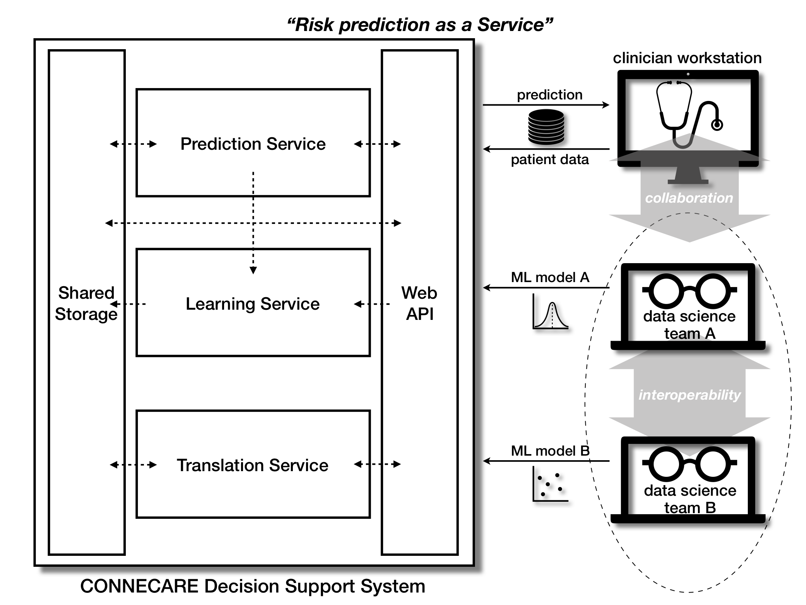

Università di Modena e Reggio Emilia
Achieve
ubiquitous access & seamless deployment
of prediction models, and
interoperability & collaboration
between data science teams and, possibly, clinicians

Web API: RESTful endpoints
Translation: R/Python models to PMML/PFA
Prediction: Serve predictions
Learning: Build prediction models
Storage: Store models